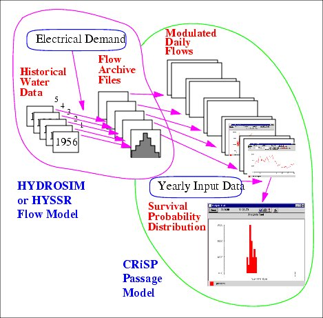

Survival and migration of fish in COMPASS can be modeled in two modes: Scenario Mode and Monte Carlo Mode.
Scenario Mode runs one year with as many releases as desired. It can be used to gain insight on the effects of changes in system parameters on the survival and migration of fish during a single water year. In this mode, natural unregulated inflows are specified. These flow into the mainstem rivers and storage reservoirs at headwaters. System operation and fish biological parameters can be varied stochastically according to user specifications.
Monte Carlo Mode runs COMPASS with as many releases as desired for one or more combinations of water year and system operations. The main variable changed in each run is river flow. Flows are specified at the project (dam), not headwaters. In each run, a different flow regime and other model parameters are used. Fish survival is determined for each run and the distribution of survivals from all runs provides an estimate of the probability distribution of survival under the specified conditions. Flow is generated from runs of the hydroregulation models maintained by the Army Corps of Engineers (HYSSR) and the BPA (HYDROSIM). The hydroregulation models use historical water data and a projection of electrical demand to simulate system flows, which are designated flow.archive files. These files give period-averaged flows at operating projects which are modulated by COMPASS to represent daily flows. COMPASS uses the modulated flows along with yearly input data files describing the system operations and fish biological parameters to produce histograms of survival.

Interaction of hydroregulation model and COMPASS in Monte Carlo Mode